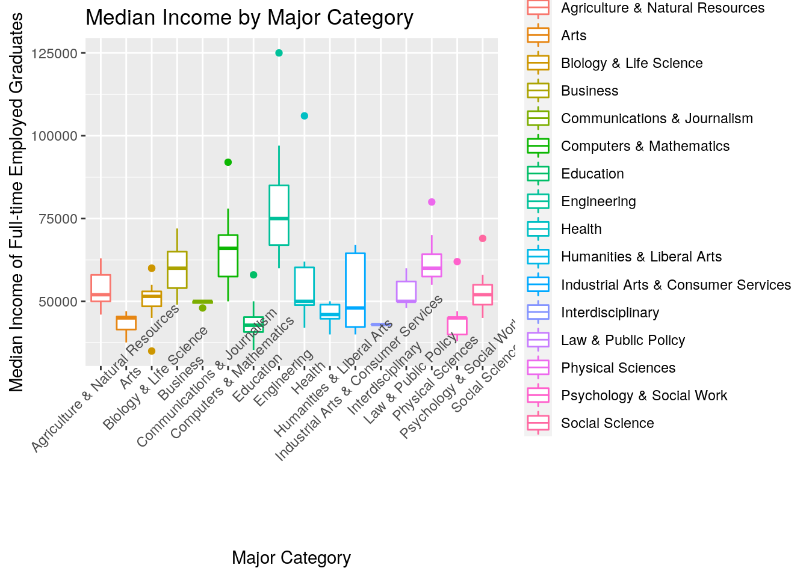

## paste this chunk into the ```{r setup} chunk at the top of your project 1 .Rmd file
knitr::opts_chunk$set(echo = TRUE, eval = TRUE, fig.align = "center", warning = F, message = F,
tidy=TRUE, tidy.opts=list(width.cutoff=60), R.options=list(max.print=100))Introduction: The two datasets I chose (college_recent_grads and college_all_ages) from fivethirtyeight both show data on recent college graduates across the 173 college majors. The majors all have a major code and are divided into major categories based on the nature of their studies. College_recent_grads has 21 variable columns and college_all_ages has 11 variable columns. Both datasets contain information about employment rates, to what degree graduates are employed, and statistics about their earnings once they are employed. The college_recent_grads has more information about the breakdown of men and women in each major, as well as how many students in each major get jobs that are reaching their degree potential. I chose this data hoping to find associations high-earning majors and majors which are occupied by women. I expect that the higher earning majors will, on average, have a less than 50% female population.
library(tidyverse)## ── Attaching packages ─────────────────────────────────────── tidyverse 1.3.0 ──## ✓ ggplot2 3.3.3 ✓ purrr 0.3.4
## ✓ tibble 3.0.4 ✓ dplyr 1.0.2
## ✓ tidyr 1.1.2 ✓ stringr 1.4.0
## ✓ readr 1.4.0 ✓ forcats 0.5.0## ── Conflicts ────────────────────────────────────────── tidyverse_conflicts() ──
## x dplyr::filter() masks stats::filter()
## x dplyr::lag() masks stats::lag()install.packages('fivethirtyeightdata', repos = 'https://fivethirtyeightdata.github.io/drat/', type = 'source')## Installing package into '/stor/home/ajh4539/R/x86_64-pc-linux-gnu-library/3.6'
## (as 'lib' is unspecified)library(fivethirtyeightdata)
library(fivethirtyeight)
college_recent_grads %>% pivot_longer(c("men", "women"), names_to = "gender", values_to= "graduates" ) %>% group_by(major_category) ## # A tibble: 346 x 21
## # Groups: major_category [16]
## rank major_code major major_category total sample_size sharewomen employed
## <int> <int> <chr> <chr> <int> <int> <dbl> <int>
## 1 1 2419 Petr… Engineering 2339 36 0.121 1976
## 2 1 2419 Petr… Engineering 2339 36 0.121 1976
## 3 2 2416 Mini… Engineering 756 7 0.102 640
## 4 2 2416 Mini… Engineering 756 7 0.102 640
## 5 3 2415 Meta… Engineering 856 3 0.153 648
## 6 3 2415 Meta… Engineering 856 3 0.153 648
## 7 4 2417 Nava… Engineering 1258 16 0.107 758
## 8 4 2417 Nava… Engineering 1258 16 0.107 758
## 9 5 2405 Chem… Engineering 32260 289 0.342 25694
## 10 5 2405 Chem… Engineering 32260 289 0.342 25694
## # … with 336 more rows, and 13 more variables: employed_fulltime <int>,
## # employed_parttime <int>, employed_fulltime_yearround <int>,
## # unemployed <int>, unemployment_rate <dbl>, p25th <dbl>, median <dbl>,
## # p75th <dbl>, college_jobs <int>, non_college_jobs <int>,
## # low_wage_jobs <int>, gender <chr>, graduates <int>The original two datasets were already tidy, and the dataset that was produced after the join was tidy as well. However, this table demonstrates the use of reshaping functions (pivot_longer) to add separate rows for the male and female graduates in each major. The columns that were formerly called “men” and “women” were combined into a new “gender” column, and the number of each gender graduate for each major is found in the “graduates” column.
joinedcollege<- inner_join(college_all_ages, college_recent_grads, by="major_code")
simplecollege = subset(joinedcollege, select = -c(13,14,15,20,23,24,25,26,27,28))
simplecollege <- simplecollege[-5,]In order to join the two datasets (college_all_ages and college_recent_grads), an inner join was used. The datasets were joined by the “major_code” variable, but had 11 total variables (columns) in common. Therefore, 10 of the variables in the new dataset were exact duplicates and were dropped using the subset function. Each of the orgiinal two datasets had 173 observations, and the new, joined dataset has 172 observations. The food science major was the only observation removed, as it was the only observation that did not have data for three variables: men, women, and sharewomen.
#This table shows the average median incomes for each major category, and reveals that engineering has the highest median income as a major category, at $77,758.62 per year.
simplecollege %>% group_by(major_category.x) %>% mutate(mean(median.x)) %>% summarize(mean(median.x)) ## `summarise()` ungrouping output (override with `.groups` argument)## # A tibble: 16 x 2
## major_category.x `mean(median.x)`
## <chr> <dbl>
## 1 Agriculture & Natural Resources 54222.
## 2 Arts 43525
## 3 Biology & Life Science 50821.
## 4 Business 60615.
## 5 Communications & Journalism 49500
## 6 Computers & Mathematics 66273.
## 7 Education 43831.
## 8 Engineering 77759.
## 9 Health 56458.
## 10 Humanities & Liberal Arts 46080
## 11 Industrial Arts & Consumer Services 52643.
## 12 Interdisciplinary 43000
## 13 Law & Public Policy 52800
## 14 Physical Sciences 62400
## 15 Psychology & Social Work 44556.
## 16 Social Science 53222.#The following table shows the rankings of the engineering majors, ranked in order of descending median income. Since engineering has the highest median income as a major category, petroleum engineering is found to be the highest earning major overall.
simplecollege %>% filter(major_category.x == "Engineering") %>% arrange(rank)## # A tibble: 29 x 21
## major_code major.x major_category.x total.x employed.x employed_fullti…
## <int> <chr> <chr> <int> <int> <int>
## 1 2419 Petrol… Engineering 19631 14002 11636
## 2 2416 Mining… Engineering 10746 7416 6419
## 3 2415 Metall… Engineering 12818 6939 5462
## 4 2417 Naval … Engineering 16094 10690 9226
## 5 2405 Chemic… Engineering 188046 131697 109406
## 6 2418 Nuclea… Engineering 9826 7320 6474
## 7 2414 Mechan… Engineering 581529 422207 362053
## 8 2408 Electr… Engineering 671647 489965 422317
## 9 2407 Comput… Engineering 154160 128742 111025
## 10 2401 Aerosp… Engineering 65734 44944 38491
## # … with 19 more rows, and 15 more variables: unemployed.x <int>,
## # unemployment_rate.x <dbl>, p25th.x <dbl>, median.x <dbl>, p75th.x <dbl>,
## # rank <int>, sample_size <int>, men <int>, women <int>, sharewomen <dbl>,
## # employed_fulltime <int>, employed_parttime <int>, college_jobs <int>,
## # non_college_jobs <int>, low_wage_jobs <int>#The following table shows the average unemployment rate for each major category. The arts majors have the highest unemployment rate after graduation, at 8.76%, and Psychology & Social Work has the second highest unemployment rate, at 7.8%
simplecollege %>% group_by(major_category.x) %>% summarize(mean(unemployment_rate.x))## `summarise()` ungrouping output (override with `.groups` argument)## # A tibble: 16 x 2
## major_category.x `mean(unemployment_rate.x)`
## <chr> <dbl>
## 1 Agriculture & Natural Resources 0.0385
## 2 Arts 0.0876
## 3 Biology & Life Science 0.0499
## 4 Business 0.0545
## 5 Communications & Journalism 0.0691
## 6 Computers & Mathematics 0.0594
## 7 Education 0.0468
## 8 Engineering 0.0506
## 9 Health 0.0472
## 10 Humanities & Liberal Arts 0.0694
## 11 Industrial Arts & Consumer Services 0.0585
## 12 Interdisciplinary 0.0773
## 13 Law & Public Policy 0.0679
## 14 Physical Sciences 0.0545
## 15 Psychology & Social Work 0.0779
## 16 Social Science 0.0657#This table gives the average percentage of women by major category. Results of this statistic are shown and explained in the Visualizing section.
simplecollege %>% group_by(major_category.x) %>% select(c(3,16)) %>% mutate(mean(sharewomen)) %>% arrange(desc(mean(sharewomen)))## # A tibble: 172 x 3
## # Groups: major_category.x [16]
## major_category.x sharewomen `mean(sharewomen)`
## <chr> <dbl> <dbl>
## 1 Agriculture & Natural Resources 0.418 0.405
## 2 Agriculture & Natural Resources 0.322 0.405
## 3 Agriculture & Natural Resources 0.283 0.405
## 4 Agriculture & Natural Resources 0.752 0.405
## 5 Agriculture & Natural Resources 0.340 0.405
## 6 Agriculture & Natural Resources 0.305 0.405
## 7 Agriculture & Natural Resources 0.728 0.405
## 8 Biology & Life Science 0.585 0.587
## 9 Agriculture & Natural Resources 0.125 0.405
## 10 Agriculture & Natural Resources 0.374 0.405
## # … with 162 more rows#The median percentage of women in each major across all college graduates is 53.4%, while the median percentage of women in majors in the top 10 ranked majors (by median earnings) was much lower, at only 14.9%.
simplecollege %>% summarize(median(sharewomen))## # A tibble: 1 x 1
## `median(sharewomen)`
## <dbl>
## 1 0.534simplecollege %>% filter(rank < 11) %>% summarize(median(sharewomen))## # A tibble: 1 x 1
## `median(sharewomen)`
## <dbl>
## 1 0.149#The following code chunk (next 10 tables) gives summary statistics for 10 numeric variables.
simplecollege %>% summarize(mean(unemployment_rate.x), sd(unemployment_rate.x), quantile(unemployment_rate.x), min(unemployment_rate.x), max(unemployment_rate.x)) #The average unemployment rate across all of the recent college graduates is 5.74%.## # A tibble: 5 x 5
## `mean(unemploym… `sd(unemploymen… `quantile(unemp… `min(unemployme…
## <dbl> <dbl> <dbl> <dbl>
## 1 0.0574 0.0192 0 0
## 2 0.0574 0.0192 0.0462 0
## 3 0.0574 0.0192 0.0547 0
## 4 0.0574 0.0192 0.0691 0
## 5 0.0574 0.0192 0.156 0
## # … with 1 more variable: `max(unemployment_rate.x)` <dbl>simplecollege %>% summarize(mean(sharewomen), sd(sharewomen), quantile(sharewomen), min(sharewomen), max(sharewomen)) #The study population of college graduates includes 52.2% women. ## # A tibble: 5 x 5
## `mean(sharewome… `sd(sharewomen)` `quantile(share… `min(sharewomen…
## <dbl> <dbl> <dbl> <dbl>
## 1 0.522 0.231 0 0
## 2 0.522 0.231 0.336 0
## 3 0.522 0.231 0.534 0
## 4 0.522 0.231 0.703 0
## 5 0.522 0.231 0.969 0
## # … with 1 more variable: `max(sharewomen)` <dbl>simplecollege %>% summarize(mean(employed.x), sd(employed.x), quantile(employed.x), min(employed.x), max(employed.x)) ### # A tibble: 5 x 5
## `mean(employed.… `sd(employed.x)` `quantile(emplo… `min(employed.x…
## <dbl> <dbl> <dbl> <int>
## 1 167028. 308010. 1492 1492
## 2 167028. 308010. 17890 1492
## 3 167028. 308010. 57274. 1492
## 4 167028. 308010. 144018. 1492
## 5 167028. 308010. 2354398 1492
## # … with 1 more variable: `max(employed.x)` <int>simplecollege %>% summarize(mean(unemployed.x), sd(unemployed.x), quantile(unemployed.x), min(unemployed.x), max(unemployed.x))## # A tibble: 5 x 5
## `mean(unemploye… `sd(unemployed.… `quantile(unemp… `min(unemployed…
## <dbl> <dbl> <dbl> <int>
## 1 9776. 18062. 0 0
## 2 9776. 18062. 1104 0
## 3 9776. 18062. 3659 0
## 4 9776. 18062. 8957. 0
## 5 9776. 18062. 147261 0
## # … with 1 more variable: `max(unemployed.x)` <int>simplecollege %>% summarize(mean(employed_fulltime_yearround.x), sd(employed_fulltime_yearround.x), quantile(employed_fulltime_yearround.x), min(employed_fulltime_yearround.x), max(employed_fulltime_yearround.x))## # A tibble: 5 x 5
## `mean(employed_… `sd(employed_fu… `quantile(emplo… `min(employed_f…
## <dbl> <dbl> <dbl> <int>
## 1 126968. 242977. 1093 1093
## 2 126968. 242977. 12924. 1093
## 3 126968. 242977. 40358. 1093
## 4 126968. 242977. 111157. 1093
## 5 126968. 242977. 1939384 1093
## # … with 1 more variable: `max(employed_fulltime_yearround.x)` <int>simplecollege %>% summarize(mean(low_wage_jobs), sd(low_wage_jobs), quantile(low_wage_jobs), min(low_wage_jobs), max(low_wage_jobs))## # A tibble: 5 x 5
## `mean(low_wage_… `sd(low_wage_jo… `quantile(low_w… `min(low_wage_j…
## <dbl> <dbl> <dbl> <int>
## 1 3879. 6960. 0 0
## 2 3879. 6960. 337. 0
## 3 3879. 6960. 1238. 0
## 4 3879. 6960. 3496 0
## 5 3879. 6960. 48207 0
## # … with 1 more variable: `max(low_wage_jobs)` <int>simplecollege %>% summarize(mean(college_jobs), sd(college_jobs), quantile(college_jobs), min(college_jobs), max(college_jobs))## # A tibble: 5 x 5
## `mean(college_j… `sd(college_job… `quantile(colle… `min(college_jo…
## <dbl> <dbl> <dbl> <int>
## 1 12387. 21345. 0 0
## 2 12387. 21345. 1745. 0
## 3 12387. 21345. 4468. 0
## 4 12387. 21345. 14596. 0
## 5 12387. 21345. 151643 0
## # … with 1 more variable: `max(college_jobs)` <int>simplecollege %>% summarize(mean(employed_fulltime), sd(employed_fulltime), quantile(employed_fulltime), min(employed_fulltime), max(employed_fulltime))## # A tibble: 5 x 5
## `mean(employed_… `sd(employed_fu… `quantile(emplo… `min(employed_f…
## <dbl> <dbl> <dbl> <int>
## 1 26166. 42957. 111 111
## 2 26166. 42957. 3181 111
## 3 26166. 42957. 10074. 111
## 4 26166. 42957. 25447. 111
## 5 26166. 42957. 251540 111
## # … with 1 more variable: `max(employed_fulltime)` <int>simplecollege %>% summarize(mean(employed_parttime), sd(employed_parttime), quantile(employed_parttime), min(employed_parttime), max(employed_parttime))## # A tibble: 5 x 5
## `mean(employed_… `sd(employed_pa… `quantile(emplo… `min(employed_p…
## <dbl> <dbl> <dbl> <int>
## 1 8877. 14679. 0 0
## 2 8877. 14679. 1014. 0
## 3 8877. 14679. 3332. 0
## 4 8877. 14679. 9981 0
## 5 8877. 14679. 115172 0
## # … with 1 more variable: `max(employed_parttime)` <int>simplecollege %>% summarize(mean(p75th.x), sd(p75th.x), quantile(p75th.x), min(p75th.x), max(p75th.x))## # A tibble: 5 x 5
## `mean(p75th.x)` `sd(p75th.x)` `quantile(p75th.x… `min(p75th.x)` `max(p75th.x)`
## <dbl> <dbl> <dbl> <dbl> <dbl>
## 1 82463. 20858. 45800 45800 210000
## 2 82463. 20858. 70000 45800 210000
## 3 82463. 20858. 80000 45800 210000
## 4 82463. 20858. 95000 45800 210000
## 5 82463. 20858. 210000 45800 210000*Note: Interesting summary statistic descriptions are discussed and summarized along with their corresponding code chuncks above.
library(ggplot2)
#heatmap
simplecollege %>% select_if(is.numeric) %>% cor %>% as.data.frame %>% rownames_to_column %>% pivot_longer(-1) %>% ggplot(aes(rowname, name, fill = value)) + geom_tile() + theme(axis.text.x = element_text(angle = 45, vjust = 1)) + geom_text(aes(label=round(value,2), size = 1))+ xlab("")+ylab("")+coord_fixed() + scale_fill_gradient2(low = "red", high = "green", mid = "white", midpoint = 0, limit = c(-1,1), name = "Correlation") + ggtitle("Correlation of Numeric Variables")#plot 2
ggplot(simplecollege, aes(x= major_category.x, y=median.x, color=major_category.x)) +geom_boxplot() + theme(axis.text.x = element_text(angle = 45, vjust = 1)) + ggtitle("Median Income by Major Category") + xlab("Major Category") + ylab("Median Income of Full-time Employed Graduates") + scale_fill_hue(l=40, c=35) 
#plot 3
ggplot(simplecollege, aes(x=major_category.x, color=major_category.x))+ geom_bar(aes(y=sharewomen), stat = "summary", fun=mean) +theme(axis.text.x = element_text(angle = 45, vjust = 1)) + ggtitle("Percentage of Women in Each Major Category") + ylab("Percentage of Women") + xlab("Major Category") + scale_y_continuous(breaks = seq(0,1,0.1))The heatmap demonstrates negative and postitive correlations between numeric variables in this dataset. Positive correlations are indicated by a more green box, while negative correlations are shown in red. One interesting negative correlation shown in the plot is that between sharewomen, or the percentage of women in each major, and the median income in each major. This means that women are less likely to be in majors with higher median incomes. The majors with higher median incomes are primarily occupied with male graduates.
The second plot shows a boxplot of the median income of all employed graduates grouped based on major category. From this plot, you can see that the Engineering category stands out as having the highest median income, with Computers & Mathematics coming in second. Lower median income major categories include the arts, interdisciplinary studies, education, and psychology & social work.
The third plot shows the average percentage of women graduates in each major, grouped by major category. Interestingly, the major category with the highest median income (shown above in plot 2) also has the lowest percentage of women. Computers and Mathematics, the second highest median earning major category (found in plot2), is also the category with the second lowest percentage of women. Majors with the highest percentages of women, at almost 80% women, include health majors and Psychology & Social Work majors.
clustdat<- simplecollege %>% select(c(10,16)) #This selects two variables (median income and percentage of women) from the simplecollege dataset and creates a new dataset that can be used in the k-means clustering.
kmeans1 <- clustdat %>% kmeans(2) #This creates the kmeans dataset for the two selected variables from the simplecollege dataset
kmeans1$size #This shows the sizes of each cluster.## [1] 108 64kmeans1$centers #This shows the centers of the two clusters.## median.x sharewomen
## 1 47779.63 0.6310291
## 2 71984.38 0.3386136kmeans1$cluster #This shows which cluster each observation is in (this is later added to the clustdat dataset as a new variable).## [1] 1 1 2 1 1 2 1 1 1 1 2 1 1 1 1 1 1 2 2 2 2 1 1 1 1 1 1 1 1 1 1 1 1 1 1 1 1
## [38] 1 1 2 2 2 2 2 2 2 2 2 2 2 2 2 2 2 2 2 2 2 2 2 2 2 2 2 2 2 1 1 1 1 1 1 1 1
## [75] 1 1 1 1 1 1 1 1 1 2 2 1 1 1 1 2 2 2 2 1 1 1 2 1 1 1 1 1 2 2 2 1 2 1 1 2 2
## [112] 1 2 1 1 1 1 2 1 1 1 1 2 1 1 1 2 1 1 1 1 1 1 1 2 1 2 1 1 1 1 1 1 1 1 1 1 1
## [149] 1 1 2 1 2 2 2 1 1 2 2 2 1 2 2 1 2 1 1 1 2 1 1 1kmeans1$betweenss ## [1] 23543786955kmeans1$tot.withinss## [1] 13628159566kmeansclust <- clustdat %>% mutate(cluster=as.factor(kmeans1$cluster)) #This adds the cluster numbers as a new variable to the clustdat dataset.
kmeansclust %>% ggplot(aes(median.x, sharewomen, color = cluster)) +geom_point() +ggtitle("K-means Clustering on Plot of Median Income vs. Percentage of Women") +xlab("Median Income") +ylab("Percentage of Women")library(cluster)
sil_width<-vector() #This is an empty vector to hold mean silhouette width.
for(i in 2:10){
kms <- kmeans(clustdat,centers=i) #This finds the kmeans for the clustdat dataset, and creates an item for it.
sil <- silhouette(kms$cluster,dist(clustdat)) #This creates and item for silhouette widths
sil_width[i]<-mean(sil[,3]) #This takes the averages of the silhouette widths.
}
ggplot()+geom_line(aes(x=1:10,y=sil_width))+scale_x_continuous(name="k",breaks=1:10)## Warning: Removed 1 row(s) containing missing values (geom_path).#This plot allows for a visualization of the average silhouette widths for different cluster numbers. The highest average silhouette width is for two clusters, although three is a close second. Therefore, two is the optimal number of clusters for this plot. This plot demonstrates the negative correlation between the Percentage of Women in each major and the median income of full-time employed graduates of each major. The clustering plot highlights the discrepancy between majors with a large percentage of women and those without. The red cluster consists of majors with lower median incomes and majors with mostly near-equal or higher percentages of women than men. Almost all of the blue cluster, higher earning cluster, however, has less than 50% women, and many with less than 25% women.